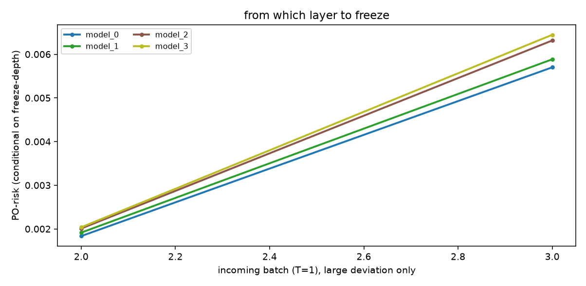

electricity (NSW, ordered in time). n_ref=10000, n_new=5000, hidden=[64, 32]. 表格 PO-risk 单独维护 outcome model μ(Y|X) 和 propensity e(T|X)。 新 batch 是 T=1。直接读 PO-risk。没有大偏差就全开；有大偏差才看从第几层开始冻。 n_new 不宜过小，否则要 online-bootstrap。
有大 deviation 的段：从 model_0 开始冻（median）


| t | PO-risk | baseline | large? | action |
|---|---|---|---|---|
| 0 | 0.0001158 | 0.0005076 | all trainable | |
| 1 | 0.000936 | 0.0005076 | all trainable | |
| 2 | 0.001832 | 0.0005076 | yes | freeze from model_0 |
| 3 | 0.005983 | 0.0005076 | yes | freeze from model_0 |
| 4 | 0.0009048 | 0.0005076 | all trainable | |
| 5 | 1.072e-05 | 0.0005076 | all trainable | |
| 6 | 9.313e-05 | 0.0005076 | all trainable |
| model | PO-risk |
|---|---|
| model_0 ★ | 0.0057 |
| model_1 | 0.005884 |
| model_2 | 0.006315 |
| model_3 | 0.006445 |